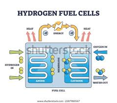

1 – Introdução à Célula a Combustível
A célula a combustível é um dispositivo eletroquímico capaz de converter energia química diretamente em energia elétrica, sem passar pelo processo de combustão tradicional.
Diferente de uma bateria, ela não armazena energia — ela produz energia continuamente enquanto houver fornecimento de combustível e oxidante.
O combustível mais comum é o hidrogênio, e o oxidante geralmente é o oxigênio do ar. O principal produto dessa reação é água, o que torna essa tecnologia muito promissora do ponto de vista ambiental.
clique para um breve conhecimento sobre Célula Combustível
2 – Princípio de Funcionamento
O funcionamento é baseado em reações de oxirredução separadas em dois eletrodos: ânodo e cátodo.
- No ânodo, o hidrogênio sofre oxidação, liberando elétrons e prótons.
- Os elétrons percorrem um circuito externo, gerando corrente elétrica.
- Os prótons atravessam o eletrólito até o cátodo.
No cátodo, ocorre a redução do oxigênio, que reage com os prótons e elétrons formando água. Ou seja, a geração de energia acontece pela separação das cargas e fluxo organizado de elétrons.
3 – Componentes Principais
- Ânodo – onde ocorre a oxidação do combustível
- Cátodo – onde ocorre a redução do oxigênio
- Eletrólito – permite a passagem de íons, mas bloqueia elétrons
- Catalisador – geralmente platina, acelera as reações
- Placas bipolares – distribuem gases e conduzem corrente
Na Engenharia de Materiais, o desenvolvimento de melhores catalisadores e eletrólitos é um dos grandes focos de pesquisa.
4 – Tipos de Célula a Combustível
Existem diferentes tipos, classificados principalmente pelo tipo de eletrólito e temperatura de operação:
- PEMFC – membrana trocadora de prótons, baixa temperatura (~80°C), muito usada em veículos
- SOFC – óxido sólido, alta temperatura (600–1000°C), usada em geração estacionária
- AFC – alcalina
- MCFC – carbonato fundido
- PAFC – ácido fosfórico
5 – Vantagens do Uso de Célula a Combustível
- Alta eficiência energética (maior que combustão convencional)
- Baixa emissão de poluentes
- Funcionamento silencioso
- Modularidade
- Possibilidade de uso de hidrogênio verde
6 – Desafios a Serem Enfrentados
- Alto custo dos catalisadores (principalmente platina)
- Produção e armazenamento de hidrogênio
- Infraestrutura limitada
- Durabilidade dos materiais
- Sensibilidade a impurezas no combustível
7 – Aplicações da Célula a Combustível
- Veículos movidos a hidrogênio
- Geração de energia estacionária
- Sistemas de backup
- Aplicações espaciais
- Equipamentos portáteis
8 – Comparando com a Combustão
Na combustão convencional, a energia química é convertida em energia térmica e depois em energia mecânica, com várias perdas energéticas. Já na célula a combustível, a conversão é direta: química para elétrica.
Além disso, a combustão emite CO₂ e outros poluentes, enquanto a célula a combustível pode emitir apenas água, dependendo do combustível utilizado.
9 – Conclusão
A célula a combustível representa uma tecnologia estratégica para a transição energética, combinando eficiência e menor impacto ambiental.
No entanto, avanços em materiais, redução de custos e infraestrutura são fundamentais para sua consolidação em larga escala.